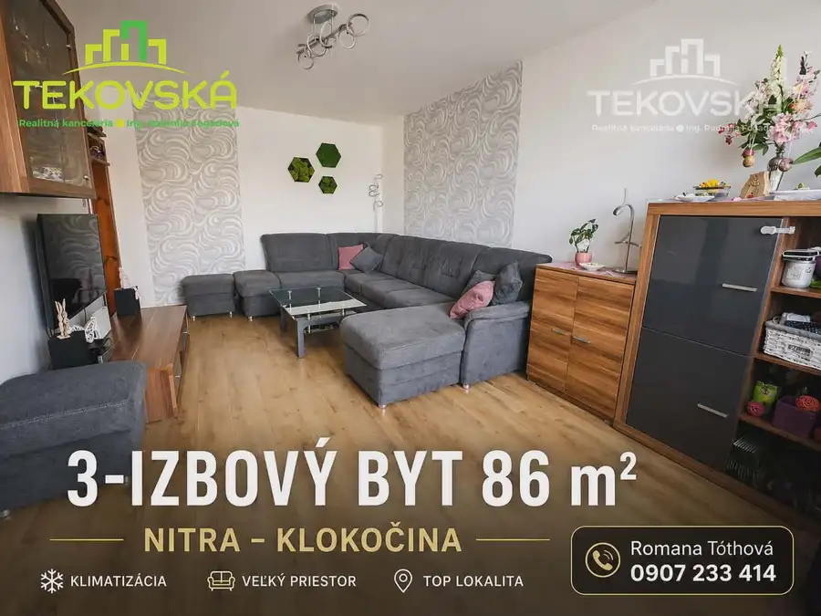
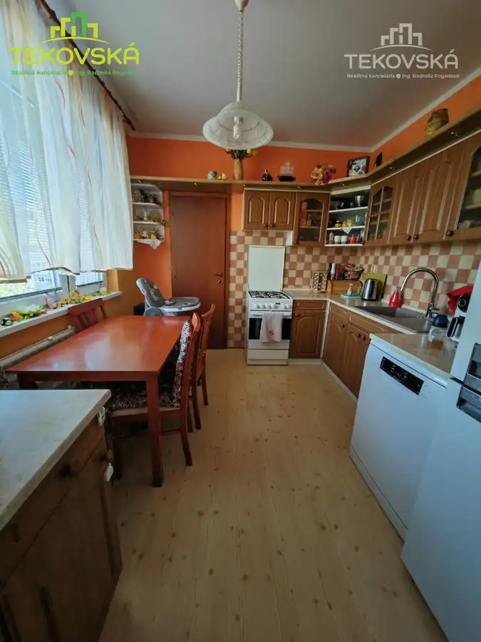
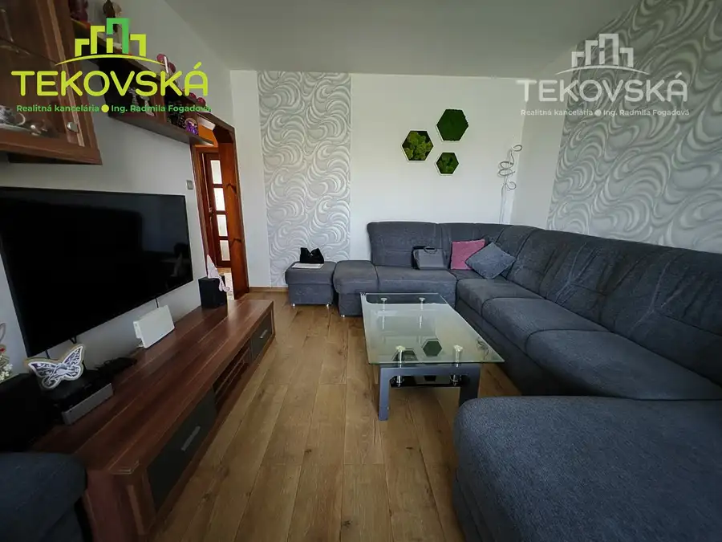
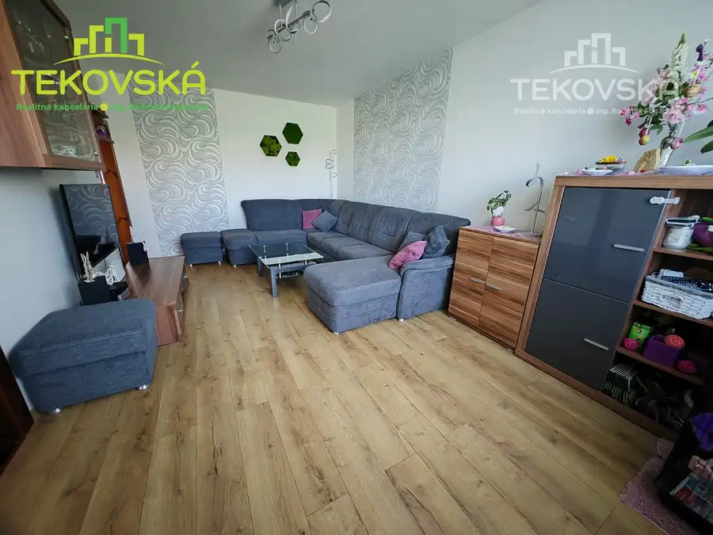
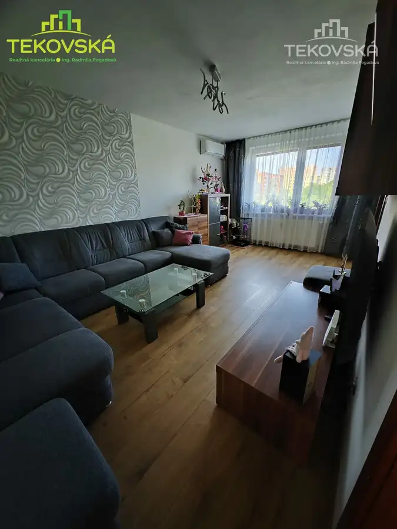
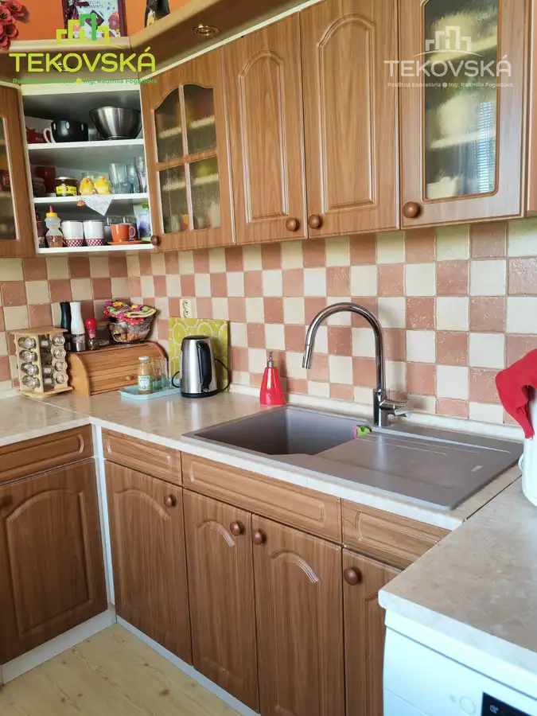

3 izbový byt 86m2, Nitra-Klokočina, klimatizácia, výťah, rekonštrukcia
Nitra






- Dispozícia3-izbový
- Plocha86 m²
- Poschodie4.
- StavČiastočná rekonštrukcia
- VlastníctvoOsobné
O nehnuteľnosti
19 z 16 034(bez predmetu)DoručenéRomana Tóthová <romana.tothova18@gmail.com>ut 28. 4. 16:12 (pred 22 hodinami)komu: mne VEĽKOMETRÁŽNY 3-IZBOVÝ BYT 86 m² | KLIMATIZÁCIA | NITRA – KLOKOČINATakýto veľký byt na Klokočine sa neobjavuje často…Ponúkam na predaj priestranný a svetlý 3-izbový byt s výmerou 86 m², ktorý vyniká výbornou dispozíciou, veľkým priestorom a kompletnou občianskou vybavenosťou v pešej dostupnosti.Byt je ideálny pre rodinu, ktorá hľadá pohodlie, priestor a lokalitu, kde má všetko po ruke. DISPOZÍCIA A PRIESTORveľká obývacia izba ako srdce bytu2 samostatné izbykuchyňa kúpeľňasamostatné WCpriestranná vstupná chodbalatková pivnicaByt pôsobí vzdušne a ponúka dostatok priestoru pre pohodlné rodinné bývanie. TECHNICKÝ STAVmurované jadro + nová elektrina v jadrekúpeľňa rekonštruovaná (2021)samostatné WC (2023)menené stupačky (2023)obývačka maľovaná + moderné tapety (2025)klimatizácia (2024) BYTOVÝ DOMzateplený (2011)nová fasáda + strecha (2024)nový výťah – zväčšená kabína (2024)nové zvončeky a domové telefóny (2026)Bytový dom prešiel kompletnou obnovou, čo zvyšuje komfort aj hodnotu nehnuteľnosti. LOKALITA – KLOKOČINA škôlka len 2 minúty pešo škola, potraviny, MHD Kaufland na dosah detské ihriskoLokalita ideálna pre rodinný život bez kompromisov. HLAVNÉ VÝHODY veľkorysá výmera 86 m² klimatizácia rekonštruované jadro modernizovaný bytový dom výborná dispozícia všetko pešo dostupné Byt pôsobí ešte priestrannejšie osobne – odporúčam vidieť na obhliadke.Byt sa predáva so zariadením.
Parametre
- Cena vrátane energií
- Nie
- Druh
- 3 izbový byt
- Dátum zverejnenia
- 29. 04. 2026
- Podlažie
- 4
- Rok výstavby
- 1985
- Stav nehnuteľnosti
- Čiastočná rekonštrukcia
- Telekomunikácie
- Internet
- Typ
- Predaj
- Typ konštrukcie
- Panelová
- Vlastníctvo
- Osobné
- Vybavenie
- Lodžia, Pivnica, Verejné parkovanie, Špajza, Výťah
- Úžitková plocha
- 86 m²